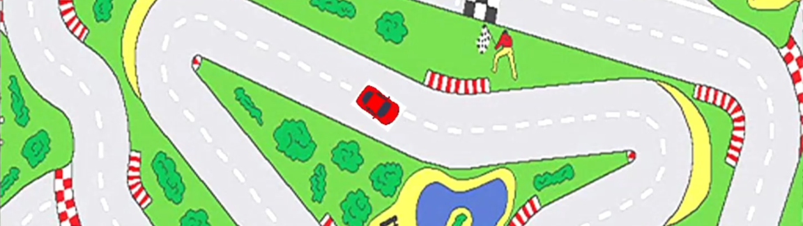

AI A* Pathfinding Project
A framework created with DirectX 11 that uses pathfinding to guide a racecar around a track. It uses the A* algorithm with a map of waypoints to create a path for the car to travel. Red waypoints are on the track and have a low travel cost, blue are off the track and have a high travel cost and yellow are checkpoints which the car travels to.
The car uses a finite state machine to change between different steering behaviours which are: seek, flee, arrive, pursuit, wander and laps. There is also a second car which can be toggled (and is needed for flee and pursuit) which the main car has some basic decision making to try and avoid colliding with.

When in steering behaviours that do not require input from the user left clicking will instead place "oil" on the nearest waypoint, increasing the travel cost to it. A powerup is also present that can be respawned and gives the waypoint it is in a lower travel cost. It gives the car a temporary speed boost.
After the project was completed a bug with the pathfinding was identified where it didn't always get all of the neighbouring nodes. When fixed it resulted in the algorithm constructing paths that no longer zigzagged.